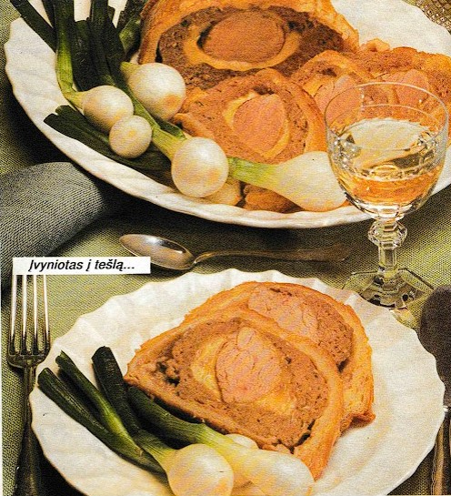

<!DOCTYPE html>
<html lang="de">
    <head>
    <meta charset="UTF-8">
    <meta name="viewport" content="width=device-width, initial-scale=1.0">
    </html>
        <style>
                @media only screen and (max-width: 915) {
                
  body {
    
  }
  .tex {
    position:absolute;
    top:3.5em;
    right: 11em;
 
}
}
body {
    width: 98%;

}


.blue{
    width: 100%;
            background-color: rgba(23, 22, 32, 0.829);
            color: rgba(178, 177, 216, 0.829);
            font-size: 16px;
            font-weight: bold;
            padding: 3px 0px;
}

 a:link, a:visited {
		  background-color: #f7f3f3;
		  color: black;
		  padding: 0.5% 2%;
		  text-align: center;
		  text-decoration: none;
		  display: inline-block;
          font-size: 150%;
		}   
a:hover, a:active {
		  background-color: #d1a138;
		}           
.t {
  width: 100%;
}
.tt{
    width: 40%;
}
.tex {
    text-align: left;
    background-color: #ffffff;
    width: 40%;
    position:absolute;
    top:3.5em;
    right: 8em;
}
.t3{
    font-family:Segoe UI;
    font-size: 90%;
    width: 60%;
    background-color: rgba(#ffffff);
    position: relative;
    left: 0%;
}
.t2{
    width: 80%;
    background-color: rgba(#ffffff);
    position: relative;
    left: 18%;
}

        </style>
    </head>
<body id="ds">
    <div>
    
    <br>
    </div>
    <div class="blue">   
        </div>
    
        <a href="\Bulviu patiekalai.html"> Bulvių patiekalai </a>
        <a href="\Mesos patiekalai.html"> Mėsos patiekalai </a>
   
    <div class="blue">  
         </div>  
         <div>
            <a href="Vyniotinis apvalkale.html" > Vyniotinis apvalkale</a> 
       </div>
    <div class="t2">
        <div>
        <div class="t3">
        <h1 style="background-color: #ffffff;"> Vyniotinis apvalkale</h1>
    </div>
    
        
        <div>
            <div class="tex" >
       <h3 >Produktai 6 porcijoms: <br>apie 250 g kiaulienos filė (nugarinės), <br>druskos, <br>šviežiai maltų pipirų,<br> 
            2 valg. š. aliejaus, <br>400 g kelių rūšių maltos mėsos, <br>100 g kapotos (arba labai stambiai maltos) 
            jautienos filė, <br>2 kiaušiniai, <br>125 g šampinjonų, <br>1 svogūno galvutė, <br>2 valg. š. maltų džiūvėsių, <br>150 g 
            fermentinio sūrio (aštresnio) riekių, <br>1 valg. š. miltų, <br>1 kiaušinio trynys.</h3>
            </div>
        </div>
   </div>
</div>
</body>
</html>